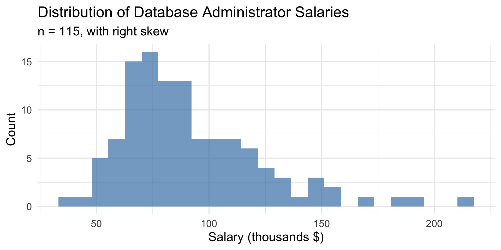
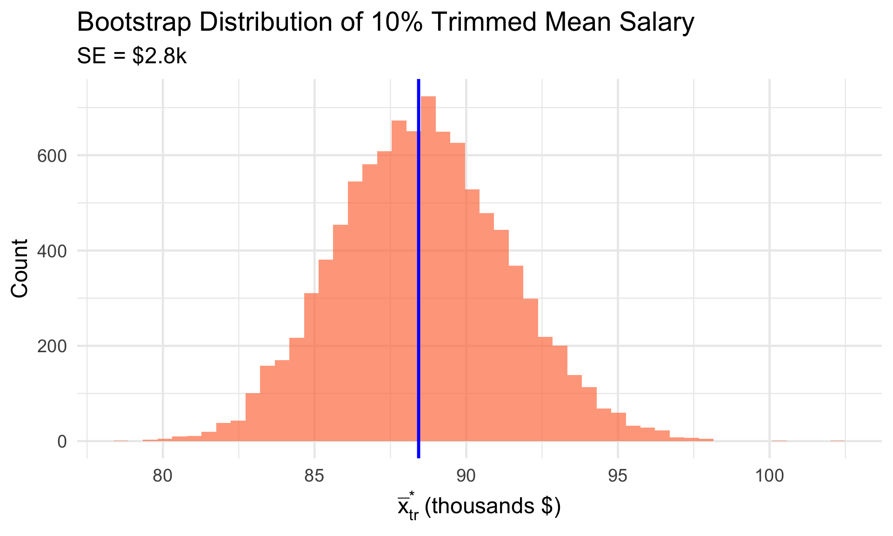
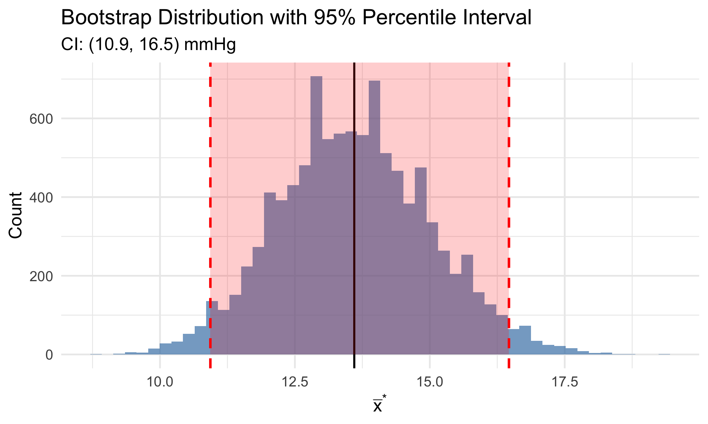
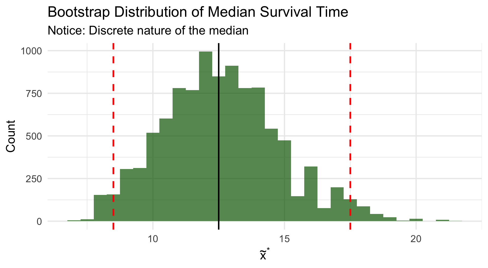
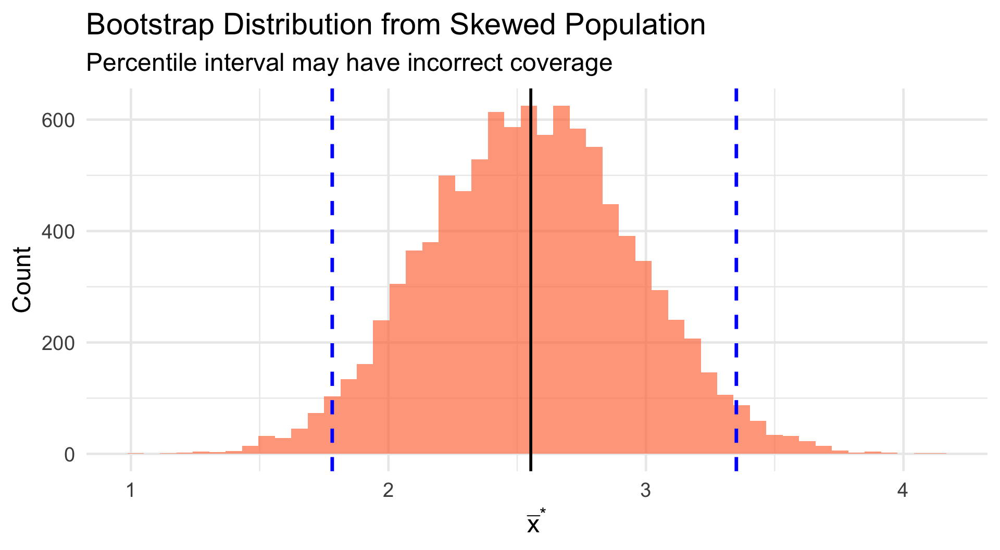
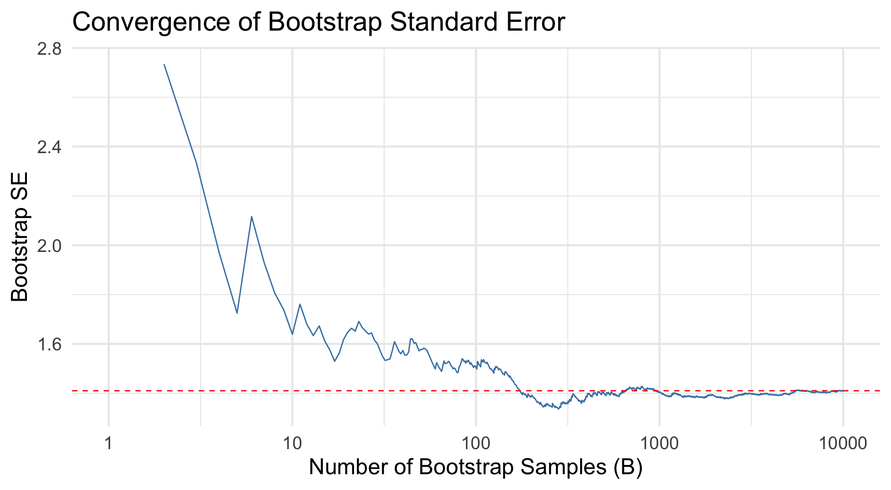
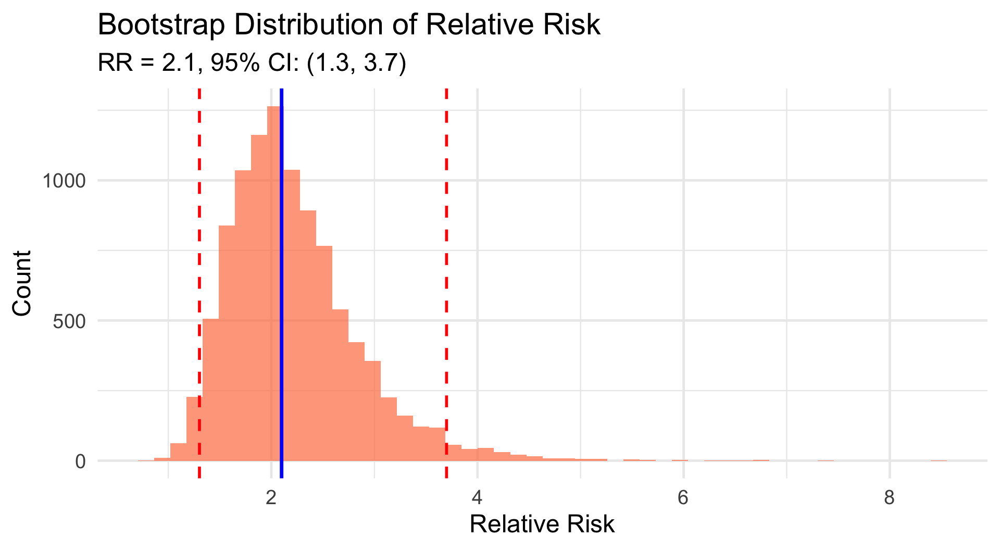

response_times <- c(8, 12, 15, 7, 22, 45, 11, 9, 14, 18, 10, 13)
n <- length(response_times)
cat("n =", n, "\n")n = 12 Mean: 15.33 daysMedian: 12.5 daysSD: 10.27 daysBSTA 551: Statistical Inference
2026-02-02
The Bootstrap Principle
Key algorithm:
Can estimate:
Cannot improve:
Today’s Goals:
response_times <- c(8, 12, 15, 7, 22, 45, 11, 9, 14, 18, 10, 13)
n <- length(response_times)
cat("n =", n, "\n")n = 12 Mean: 15.33 daysMedian: 12.5 daysSD: 10.27 daysNote the outlier at 45 days — this motivates robust methods!
Definition
The bootstrap standard error of a statistic \(\hat{\theta}\) is the standard deviation of its bootstrap distribution:
\[SE_{boot}(\hat{\theta}) = \sqrt{\frac{1}{B-1}\sum_{b=1}^{B}(\hat{\theta}^*_b - \bar{\hat{\theta}}^*)^2}\]
where \(\bar{\hat{\theta}}^* = \frac{1}{B}\sum_{b=1}^{B}\hat{\theta}^*_b\)
This gives us an empirical estimate of the standard error without assuming any specific distribution!
A pilot study measures systolic blood pressure reduction (mmHg) after 8 weeks on a new antihypertensive:
set.seed(551)
B <- 10000
boot_means_bp <- replicate(B, {
boot_sample <- sample(bp_reduction, n_bp, replace = TRUE)
mean(boot_sample)
})
# Compare standard errors
classical_se <- sd(bp_reduction) / sqrt(n_bp)
boot_se <- sd(boot_means_bp)
cat("Classical SE (s/√n):", round(classical_se, 3), "\n")Classical SE (s/√n): 1.463 Bootstrap SE: 1.41 Ratio: 0.964The bootstrap SE is very close to the classical SE when assumptions are met!
For trimmed means (robust to outliers), we don’t have simple SE formulas.
# Data with potential outlier
response_times <- c(8, 12, 15, 7, 22, 45, 11, 9, 14, 18, 10, 13)
# Bootstrap for 10% trimmed mean
set.seed(551)
boot_trimmed <- replicate(10000, {
x <- sample(response_times, length(response_times), replace = TRUE)
mean(x, trim = 0.10) # Trim 10% from each end
})
cat("Sample mean:", round(mean(response_times), 2), "\n")Sample mean: 15.33 10% Trimmed mean: 13.2 Bootstrap SE of trimmed mean: 2.67# Sample salaries (in thousands) - simulated based on Devore example
set.seed(123)
salaries <- round(c(rlnorm(100, log(80), 0.3), rlnorm(15, log(150), 0.4))) * 1000
n_sal <- length(salaries)
tibble(x = salaries) |>
ggplot(aes(x = x/1000)) +
geom_histogram(bins = 25, fill = "steelblue", alpha = 0.7) +
labs(x = "Salary (thousands $)", y = "Count",
title = "Distribution of Database Administrator Salaries",
subtitle = paste0("n = ", n_sal, ", with right skew"))
# 10% trimmed mean
xbar_tr <- mean(salaries, trim = 0.10)
# Bootstrap
set.seed(551)
B <- 10000
boot_trimmed_sal <- replicate(B, {
x <- sample(salaries, n_sal, replace = TRUE)
mean(x, trim = 0.10)
})
cat("10% Trimmed mean:", round(xbar_tr, 0), "\n")10% Trimmed mean: 88430 Bootstrap SE: 2808 Bootstrap mean of trimmed means: 88561tibble(x = boot_trimmed_sal) |>
ggplot(aes(x = x/1000)) +
geom_histogram(bins = 50, fill = "coral", alpha = 0.7) +
geom_vline(xintercept = xbar_tr/1000, color = "blue", linewidth = 1.2) +
labs(x = expression(bar(x)[tr]^"*" ~ "(thousands $)"), y = "Count",
title = "Bootstrap Distribution of 10% Trimmed Mean Salary",
subtitle = paste0("SE = $", round(sd(boot_trimmed_sal)/1000, 1), "k"))
The bootstrap distribution appears approximately normal — good for t-based intervals!
Bootstrap Bias Estimate
The bootstrap estimate of bias is: \[\widehat{\text{Bias}} = \bar{\hat{\theta}}^* - \hat{\theta}\]
where \(\bar{\hat{\theta}}^*\) is the mean of the bootstrap distribution and \(\hat{\theta}\) is the original sample statistic.
# Check bias for trimmed mean
boot_bias <- mean(boot_trimmed_sal) - xbar_tr
cat("Bootstrap bias estimate:", round(boot_bias, 0), "\n")Bootstrap bias estimate: 131 Bias as % of estimate: 0.15 %Small bias suggests the bootstrap distribution is well-centered!
Several methods exist for constructing bootstrap CIs:
Practical Guidance
Definition
A 95% bootstrap percentile interval for parameter \(\theta\) has endpoints equal to the 2.5th and 97.5th percentiles of the bootstrap distribution.
More generally, a \(100(1-\alpha)\%\) bootstrap percentile interval uses the \(\alpha/2\) and \(1-\alpha/2\) quantiles: \[\left(\hat{\theta}^*_{\alpha/2}, \; \hat{\theta}^*_{1-\alpha/2}\right)\]
Intuition: If 95% of bootstrap statistics fall between \(L\) and \(U\), then \((L, U)\) is a plausible range for the true parameter.
# Blood pressure reduction data
set.seed(551)
bp_reduction <- c(12, 8, 15, 22, 5, 18, 11, 14, 9, 25, 7, 16, 13, 10, 19)
# Bootstrap
boot_means_bp <- replicate(10000, mean(sample(bp_reduction, length(bp_reduction), replace = TRUE)))
# 95% Percentile interval
percentile_ci <- quantile(boot_means_bp, probs = c(0.025, 0.975))
cat("Sample mean:", round(mean(bp_reduction), 2), "mmHg\n")Sample mean: 13.6 mmHg95% Bootstrap Percentile CI: 10.93 16.47 mmHg# Compare to t-interval
t_ci <- t.test(bp_reduction)$conf.int
cat("95% t-interval:", round(t_ci, 2), "mmHg")95% t-interval: 10.46 16.74 mmHgtibble(x = boot_means_bp) |>
ggplot(aes(x = x)) +
geom_histogram(bins = 50, fill = "steelblue", alpha = 0.7) +
geom_vline(xintercept = percentile_ci, color = "red", linewidth = 1.2, linetype = "dashed") +
geom_vline(xintercept = mean(bp_reduction), color = "black", linewidth = 1) +
annotate("rect", xmin = percentile_ci[1], xmax = percentile_ci[2],
ymin = 0, ymax = Inf, alpha = 0.2, fill = "red") +
labs(x = expression(bar(x)^"*"), y = "Count",
title = "Bootstrap Distribution with 95% Percentile Interval",
subtitle = paste0("CI: (", round(percentile_ci[1], 1), ", ", round(percentile_ci[2], 1), ") mmHg"))
For median survival, we don’t have simple formulas for CIs. Bootstrap is ideal!
# Survival times (months) for 20 cancer patients
survival_times <- c(4, 8, 12, 15, 18, 6, 9, 24, 36, 11,
7, 14, 21, 10, 13, 5, 17, 22, 8, 19)
# Bootstrap for median
set.seed(551)
boot_medians <- replicate(10000, {
median(sample(survival_times, length(survival_times), replace = TRUE))
})
# Results
cat("Sample median:", median(survival_times), "months\n")Sample median: 12.5 monthsBootstrap SE: 2.22 months95% Percentile CI: 8.5 17.5 monthsmed_ci <- quantile(boot_medians, c(0.025, 0.975))
tibble(x = boot_medians) |>
ggplot(aes(x = x)) +
geom_histogram(bins = 30, fill = "darkgreen", alpha = 0.7) +
geom_vline(xintercept = med_ci, color = "red", linewidth = 1.2, linetype = "dashed") +
geom_vline(xintercept = median(survival_times), color = "black", linewidth = 1) +
labs(x = expression(tilde(x)^"*"), y = "Count",
title = "Bootstrap Distribution of Median Survival Time",
subtitle = "Notice: Discrete nature of the median")
The bootstrap median distribution takes on few unique values — this is typical!
Bootstrap t Interval (Simple Version)
If the bootstrap distribution is approximately normal with small bias, use: \[\hat{\theta} \pm t_{\alpha/2, n-1} \cdot SE_{boot}\]
where \(SE_{boot}\) is the bootstrap standard error.
# Bootstrap t interval for trimmed mean salary
xbar_tr <- mean(salaries, trim = 0.10)
se_boot <- sd(boot_trimmed_sal)
t_crit <- qt(0.975, df = length(salaries) - 1)
ci_lower <- xbar_tr - t_crit * se_boot
ci_upper <- xbar_tr + t_crit * se_boot
cat("Bootstrap t 95% CI for trimmed mean salary:\n")Bootstrap t 95% CI for trimmed mean salary:($82868, $93992)Bootstrap t Interval (More Sophisticated)
For each bootstrap sample, compute: \[T^* = \frac{\bar{X}^* - \bar{x}}{S^*/\sqrt{n}}\]
Use quantiles \(Q^*_{\alpha/2}\) and \(Q^*_{1-\alpha/2}\) of the bootstrap t distribution: \[\left(\bar{x} - Q^*_{1-\alpha/2} \cdot \frac{s}{\sqrt{n}}, \; \bar{x} - Q^*_{\alpha/2} \cdot \frac{s}{\sqrt{n}}\right)\]
This method adapts to skewness in the data!
bootstrap_t_interval <- function(data, B = 10000, conf = 0.95) {
n <- length(data)
xbar <- mean(data)
se <- sd(data) / sqrt(n)
# Compute bootstrap t statistics
t_star <- replicate(B, {
boot_samp <- sample(data, n, replace = TRUE)
(mean(boot_samp) - xbar) / (sd(boot_samp) / sqrt(n))
})
# Quantiles
alpha <- 1 - conf
q_lower <- quantile(t_star, alpha/2)
q_upper <- quantile(t_star, 1 - alpha/2)
# CI (note the reversal!)
c(xbar - q_upper * se, xbar - q_lower * se)
}
# Apply to blood pressure data
boot_t_ci <- bootstrap_t_interval(bp_reduction)
cat("Bootstrap t CI:", round(boot_t_ci, 2), "mmHg")Bootstrap t CI: 10.73 17.17 mmHgUnderstanding the Bootstrap t Formula
The percentile interval uses quantiles directly: \((\hat{\theta}^*_{\alpha/2}, \hat{\theta}^*_{1-\alpha/2})\)
The bootstrap t interval uses quantiles of the t-statistics with reversal: \[\left(\bar{x} - Q^*_{1-\alpha/2} \cdot SE, \; \bar{x} - Q^*_{\alpha/2} \cdot SE\right)\]
The reversal accounts for the fact that if \(T^*\) is large, then \(\bar{X}^*\) was above \(\bar{x}\), so the lower bound for \(\mu\) should be reduced.
This is analogous to how the classical t-interval works: large \(t\) values suggest the true mean might be lower than \(\bar{x}\).
# Compare all CI methods for BP reduction data
set.seed(551)
# Classical t
t_result <- t.test(bp_reduction)$conf.int
# Bootstrap percentile
boot_stats <- replicate(10000, mean(sample(bp_reduction, length(bp_reduction), replace = TRUE)))
pct_ci <- quantile(boot_stats, c(0.025, 0.975))
# Bootstrap t
boot_t_ci <- bootstrap_t_interval(bp_reduction)
tibble(
Method = c("Classical t", "Bootstrap Percentile", "Bootstrap t"),
Lower = c(t_result[1], pct_ci[1], boot_t_ci[1]),
Upper = c(t_result[2], pct_ci[2], boot_t_ci[2])
) |>
mutate(
Width = Upper - Lower,
across(Lower:Width, ~round(.x, 2))
)# A tibble: 3 × 4
Method Lower Upper Width
<chr> <dbl> <dbl> <dbl>
1 Classical t 10.5 16.7 6.28
2 Bootstrap Percentile 10.9 16.5 5.53
3 Bootstrap t 10.8 17.2 6.47# Highly skewed data
set.seed(551)
skewed_data <- rexp(15, rate = 0.5) # Exponential with mean 2
boot_skewed <- replicate(10000, mean(sample(skewed_data, 15, replace = TRUE)))
pct_ci_skew <- quantile(boot_skewed, c(0.025, 0.975))
tibble(x = boot_skewed) |>
ggplot(aes(x = x)) +
geom_histogram(bins = 50, fill = "coral", alpha = 0.7) +
geom_vline(xintercept = pct_ci_skew, color = "blue", linewidth = 1.2, linetype = "dashed") +
geom_vline(xintercept = mean(skewed_data), color = "black", linewidth = 1) +
labs(x = expression(bar(x)^"*"), y = "Count",
title = "Bootstrap Distribution from Skewed Population",
subtitle = "Percentile interval may have incorrect coverage")
Guidelines
# Demonstrating convergence of bootstrap SE
set.seed(551)
B_values <- c(100, 500, 1000, 5000, 10000)
convergence <- map_dfr(B_values, function(B) {
boot_means <- replicate(B, mean(sample(bp_reduction, length(bp_reduction), replace = TRUE)))
tibble(B = B, SE = sd(boot_means))
})
convergence# A tibble: 5 × 2
B SE
<dbl> <dbl>
1 100 1.51
2 500 1.37
3 1000 1.38
4 5000 1.41
5 10000 1.41set.seed(551)
# Run multiple bootstrap analyses with different B
running_se <- tibble(
B = 1:10000,
cumulative_se = accumulate(
replicate(10000, mean(sample(bp_reduction, length(bp_reduction), replace = TRUE))),
~c(.x, .y),
.init = numeric(0)
)[-1] |> map_dbl(sd)
)
running_se |>
ggplot(aes(x = B, y = cumulative_se)) +
geom_line(color = "steelblue") +
geom_hline(yintercept = tail(running_se$cumulative_se, 1), linetype = "dashed", color = "red") +
labs(x = "Number of Bootstrap Samples (B)", y = "Bootstrap SE",
title = "Convergence of Bootstrap Standard Error") +
scale_x_log10()
| Situation | Recommendation |
|---|---|
| Small n (≤10), normal data | Classical t preferred |
| Small n (≤10), skewed data | Bootstrap t (with caution) |
| Large n, normal data | Either works well |
| Large n, skewed data | Bootstrap t preferred |
| Complex statistic (trimmed mean, ratio) | Bootstrap (no classical alternative) |
Key insight: The bootstrap learns skewness from the sample, but small samples may not accurately represent population skewness.
Bootstrap Works Well When:
Bootstrap May Struggle When:
In a cardiovascular study:
set.seed(551)
n1 <- 3338; x1 <- 55
n2 <- 2676; x2 <- 21
# Bootstrap
boot_rr <- replicate(10000, {
# Resample from each group (binary outcomes)
boot_p1 <- sum(sample(c(rep(1, x1), rep(0, n1 - x1)), n1, replace = TRUE)) / n1
boot_p2 <- sum(sample(c(rep(1, x2), rep(0, n2 - x2)), n2, replace = TRUE)) / n2
# Handle division by zero
if (boot_p2 == 0) return(NA)
boot_p1 / boot_p2
})
boot_rr <- boot_rr[!is.na(boot_rr)]
cat("Bootstrap SE:", round(sd(boot_rr), 3), "\n")Bootstrap SE: 0.627 95% Percentile CI: 1.3 3.7rr_ci <- quantile(boot_rr, c(0.025, 0.975))
tibble(x = boot_rr) |>
ggplot(aes(x = x)) +
geom_histogram(bins = 50, fill = "coral", alpha = 0.7) +
geom_vline(xintercept = rr_hat, color = "blue", linewidth = 1.2) +
geom_vline(xintercept = rr_ci, color = "red", linewidth = 1, linetype = "dashed") +
labs(x = "Relative Risk", y = "Count",
title = "Bootstrap Distribution of Relative Risk",
subtitle = paste0("RR = ", round(rr_hat, 2), ", 95% CI: (",
round(rr_ci[1], 2), ", ", round(rr_ci[2], 2), ")"))
Interpretation: High BP patients have 1.3 to 3.7 times the cardiovascular risk (95% CI).
A trial compares time to pain relief for two analgesics:
set.seed(551)
# Treatment A: faster, less variable
drug_A <- c(12, 18, 15, 22, 14, 16, 20, 13, 17, 19)
# Treatment B: slower, more variable
drug_B <- c(25, 18, 35, 22, 28, 15, 42, 20, 30, 24)
cat("Drug A - Mean:", round(mean(drug_A), 1), ", SD:", round(sd(drug_A), 1), "\n")Drug A - Mean: 16.6 , SD: 3.2 Drug B - Mean: 25.9 , SD: 8.2 Difference (B - A): 9.3 minutesset.seed(551)
# Bootstrap the difference in means
boot_diff <- replicate(10000, {
boot_A <- sample(drug_A, length(drug_A), replace = TRUE)
boot_B <- sample(drug_B, length(drug_B), replace = TRUE)
mean(boot_B) - mean(boot_A)
})
# Results
diff_ci <- quantile(boot_diff, c(0.025, 0.975))
cat("Bootstrap SE:", round(sd(boot_diff), 2), "\n")Bootstrap SE: 2.62 95% CI for difference: 4.5 14.7 minutesSince CI excludes 0, there’s evidence Drug B takes longer to provide relief.
In a case-control study of lung cancer and smoking:
# Lung cancer cases
cases_smokers <- 85; cases_nonsmokers <- 15
# Controls
controls_smokers <- 60; controls_nonsmokers <- 40
# Sample odds ratio
or_hat <- (cases_smokers * controls_nonsmokers) / (cases_nonsmokers * controls_smokers)
cat("Sample Odds Ratio:", round(or_hat, 2))Sample Odds Ratio: 3.78set.seed(551)
# Bootstrap
n_cases <- cases_smokers + cases_nonsmokers
n_controls <- controls_smokers + controls_nonsmokers
boot_or <- replicate(10000, {
# Resample cases
boot_cases <- sample(c(rep(1, cases_smokers), rep(0, cases_nonsmokers)),
n_cases, replace = TRUE)
boot_case_smoke <- sum(boot_cases)
boot_case_nonsmoke <- n_cases - boot_case_smoke
# Resample controls
boot_controls <- sample(c(rep(1, controls_smokers), rep(0, controls_nonsmokers)),
n_controls, replace = TRUE)
boot_ctrl_smoke <- sum(boot_controls)
boot_ctrl_nonsmoke <- n_controls - boot_ctrl_smoke
# OR (with continuity correction)
(boot_case_smoke + 0.5) * (boot_ctrl_nonsmoke + 0.5) /
((boot_case_nonsmoke + 0.5) * (boot_ctrl_smoke + 0.5))
})
cat("95% CI for OR:", round(quantile(boot_or, c(0.025, 0.975)), 2))95% CI for OR: 1.98 7.89| Method | Formula | When to Use |
|---|---|---|
| Percentile | \((\hat{\theta}^*_{\alpha/2}, \hat{\theta}^*_{1-\alpha/2})\) | Symmetric bootstrap dist., low bias |
| Bootstrap t (simple) | \(\hat{\theta} \pm t_{\alpha/2} \cdot SE_{boot}\) | Normal bootstrap dist. |
| Bootstrap t (studentized) | Uses bootstrap t-statistics | Skewed data, more accurate |
Key Point
Bootstrap t intervals have better coverage than percentile intervals for skewed data, but require the bootstrap SE to be meaningful.
Can estimate:
Cannot improve:
Important Reminder
The bootstrap does not create new information. It uses the sample you have to understand the variability of your estimate.
Next Topics:
Later:
Thank you!
Lesson 10 - Bootstrap Confidence Intervals